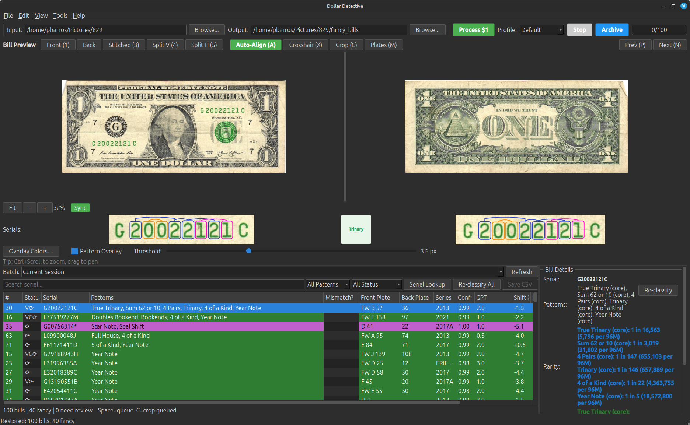
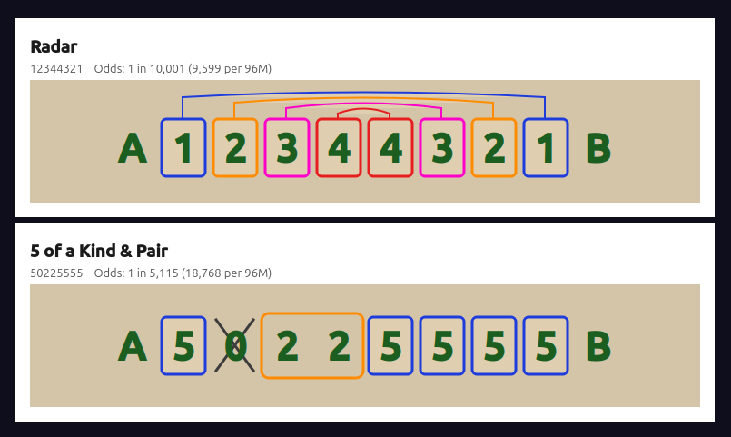
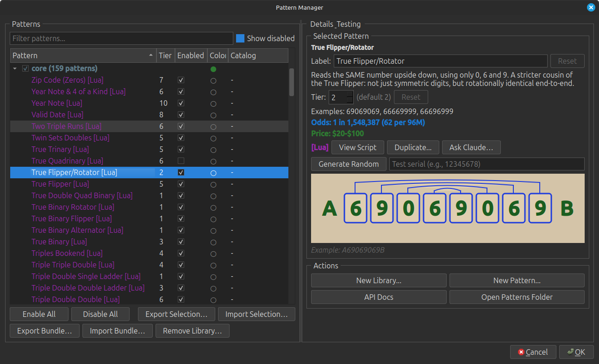
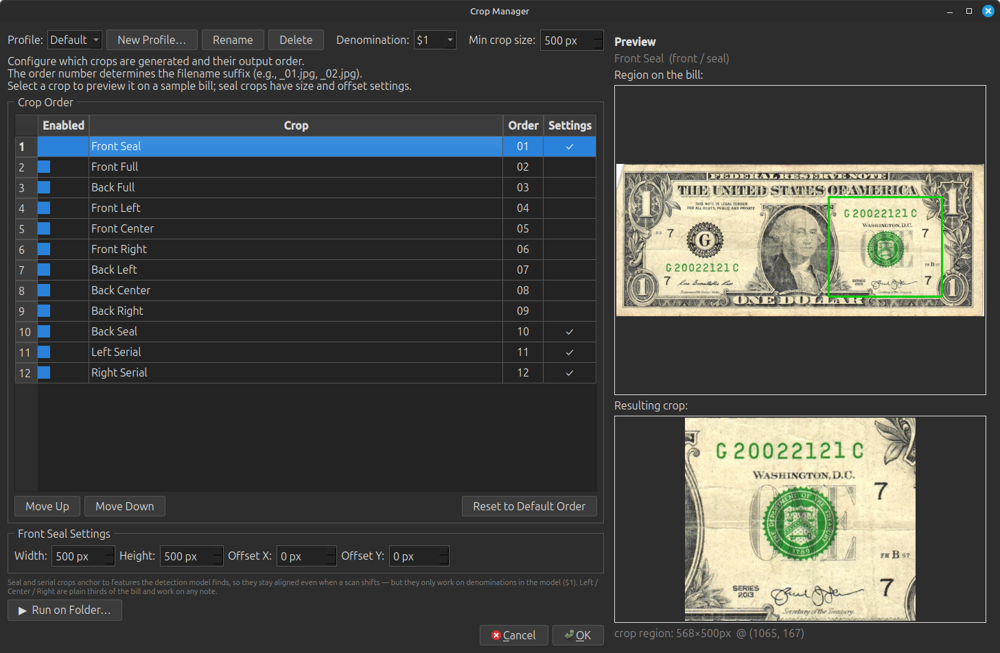

Find the fancy in every bill.
Dollar Detective scans your bill images, reads the serial numbers with OCR, and flags the collectible fancy serial numbers — radars, repeaters, ladders, solids, low serials and 100+ more patterns — before you ever list them.
Free & open source. Each button opens a short install guide — pick the right build and get past the one-time security prompt. Or browse all releases →




Built for serious bill hunters
From a shoebox of scans to a shortlist of keepers — Dollar Detective does the tedious part.
OCR serial reading
Reads the serial number off each bill image automatically, front and back, correcting orientation and skew.
100+ fancy patterns
Radars, repeaters, ladders, solids, binaries, low serials, year & date notes, and the full Green Guide catalog — each with rarity odds and a value tier.
Gas-pump & seal shift
Flags misaligned "gas pump" digits and treasury-seal overprint shifts — print errors the number alone can't tell you.
Strap check
Type a strap's first serial and count; it predicts which notes in the run would be fancy before you even scan them.
eBay crop manager & labels
Generates clean, listing-ready serial crops and printable labels so cataloging a haul is fast.
Serial lookup
Check any serial by hand and see every pattern it hits, with a clear overlay of why.
Three steps
Point it at a folder
Drop in your scanned bill images — Dollar Detective organizes, orients and pairs fronts with backs.
Let it classify
It reads each serial and runs it against the whole pattern engine, scoring rarity and value.
Keep the winners
Sort by the most patterns or highest tier, review the overlays, and export crops for listing.
Start hunting
Free, open source, and runs on your own machine — your images never leave your computer.
Download & install guide →